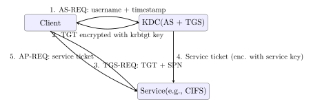

Chapter 19: Advanced Network Protocol Security¶
This chapter examines security vulnerabilities and hardening measures in foundational internet infrastructure protocols—BGP, DNS, NTP—and then turns to enterprise identity protocols (Kerberos, Active Directory, LDAP) that are the primary targets of lateral movement in modern intrusions.
19.1 BGP Security¶
The Border Gateway Protocol (BGP) is the routing protocol of the internet. It was designed for trusted peering relationships between autonomous systems (ASes) and has virtually no built-in authentication.
Definition 19.1 (BGP Hijacking)
BGP hijacking occurs when an AS announces IP prefixes it does not legitimately own. Receiving ASes, lacking verification mechanisms, may accept and propagate the false route, redirecting traffic destined for the victim to the attacker. Categories include:
-
Prefix hijacking: announcing the exact victim prefix.
-
Sub-prefix hijacking: announcing a more-specific (longer) prefix, which BGP’s longest-match rule prefers; more reliably attracts traffic.
-
AS-path manipulation: shortening the AS-path to appear closer to a destination, influencing routing decisions.
Example 19.1 (Pakistan Telecom / YouTube 2008)
On 24 February 2008, Pakistan Telecom (AS17557), attempting to block YouTube within Pakistan, announced 208.65.153.0/24—a more-specific prefix than YouTube’s 208.65.152.0/22. PCCW (AS3491), Pakistan Telecom’s upstream provider, propagated the route globally. For approximately two hours, YouTube traffic worldwide was routed to Pakistan Telecom, causing a near-total YouTube outage. This incident accelerated adoption of BGP prefix filtering and, later, RPKI.
19.2 RPKI: Resource Public Key Infrastructure¶
Definition 19.2 (Route Origin Authorization (ROA))
An ROA is a digitally signed object (RFC 6482) that authorises an AS to originate one or more IP prefixes. It is signed by the IP address holder’s resource certificate, which chains to a Regional Internet Registry (RIR: ARIN, RIPE NCC, APNIC, LACNIC, AFRINIC). Each ROA specifies:
-
The Autonomous System Number (ASN) permitted to originate the prefix.
-
The IP prefix(es) covered.
-
A
maxLengthfield limiting the most-specific prefix the AS may announce (prevents sub-prefix hijacks).
# Install Routinator (NLnet Labs RPKI validator)
apt install routinator
routinator init --accept-arin-rpa
# Query ROA for a prefix
routinator validate --prefix 208.65.153.0/24 --asn 36561
# Output:
# Status: Valid
# Route: 208.65.153.0/24 (max-length: 24)
# Validated by ROA: AS36561 -> 208.65.153.0/24
# Check RPKI coverage statistics
curl https://rpki-monitor.antiddos.systems/api/v1/stats | python3 -m json.tool
RPKI Deployment Status
As of 2024, over 40% of globally routed BGP prefixes have valid ROAs. Major networks including Cloudflare, AWS, Hurricane Electric, and most European ISPs drop RPKI-invalid routes. RPKI does not prevent all BGP attacks (BGPsec, RFC 8205, provides path validation but has negligible deployment) but effectively prevents origin hijacks of covered prefixes.
19.3 DNS Privacy: DoH and DoT¶
Definition 19.3 (DNS over TLS (DoT, RFC 7858))
DoT wraps DNS messages in a TLS session on TCP port 853. It provides confidentiality and integrity for DNS queries between the client and its configured resolver. Enterprise environments can inspect DoT by deploying a TLS-intercepting resolver at the network boundary.
Definition 19.4 (DNS over HTTPS (DoH, RFC 8484))
DoH encapsulates DNS queries as HTTPS requests (application/dns-message), typically to a well-known URI (/dns-query). Because DoH traffic is indistinguishable from ordinary HTTPS on port 443, it’s significantly harder for enterprise proxies and firewalls to intercept or block, creating a tension between user privacy and enterprise monitoring requirements.
Enterprise Monitoring vs. DoH
DoH configured at the browser level (Firefox Trusted Recursive Resolver, Chrome Secure DNS) bypasses enterprise DNS sinkholes, URL filtering, and threat intelligence feeds. Mitigations for enterprises:
-
Block DNS-over-HTTPS to known public resolvers (1.1.1.1, 8.8.8.8) by IP at the firewall.
-
Deploy an enterprise DoH resolver to serve as the canonical endpoint.
-
Use MDM/GPO to configure browsers’ DoH endpoint to the enterprise resolver.
19.4 NTP Security¶
Definition 19.5 (NTP Amplification Attack)
NTP servers respond to monlist (REQ_MON_GETLIST) queries with a list of up to 600 recent clients—an amplification factor of up to 1000x. An attacker spoofing the victim’s IP as the source causes massive UDP traffic toward the victim. Mitigations: disable monlist (noquery in ntp.conf); source-address validation (BCP38) at ISPs.
Definition 19.6 (Network Time Security (NTS, RFC 8915))
NTS adds authenticated key exchange and AEAD-protected NTP packets. A client performs a TLS handshake with an NTS Key Exchange server to obtain session keys and cookies. Subsequent NTP packets carry an AEAD authentication tag, preventing time-shifting attacks where an attacker manipulates system clocks to invalidate TLS certificates or affect log timestamps.
19.5 Kerberos and Active Directory¶
Definition 19.7 (Kerberos Authentication Flow)
Kerberos (RFC 4120) provides single sign-on via a Key Distribution Centre (KDC) split into two services:
-
Authentication Service (AS): issues a Ticket Granting Ticket (TGT) after verifying the user’s password.
-
Ticket Granting Service (TGS): issues Service Tickets in exchange for a valid TGT.
Neither the password nor the long-term key is transmitted on the wire; all secrets are used only to encrypt/decrypt tickets.

19.6 Active Directory Attack Techniques¶
AS-REP Roasting
By default, Kerberos requires pre-authentication: the client proves knowledge of its password by encrypting the current timestamp with a key derived from the password. If pre-authentication is disabled for an account (a misconfiguration), any unauthenticated user can request an AS-REP for that account. The AS-REP contains material encrypted with the target account’s key (derivable from the password), which can be extracted and cracked offline.
# Find accounts with pre-auth disabled (requires LDAP read)
impacket-GetNPUsers domain.local/ -no-pass -usersfile users.txt
# Output: $krb5asrep$23$victim@DOMAIN:HASH...
# Crack with hashcat
hashcat -m 18200 asrep_hashes.txt rockyou.txt
Defence: Enable pre-authentication on all accounts; disable UF_DONT_REQUIRE_PREAUTH flag; alert on AS-REQ without pre-auth field.
AS-REP Roasting in Depth¶
AS-REP Roasting is notable because it requires no credentials at all to initiate. The UF_DONT_REQUIRE_PREAUTH flag (userAccountControl attribute bit 0x400000) is often set on service accounts that use legacy applications expecting old Kerberos behaviour, or on accounts that were migrated from environments where pre-authentication was disabled domain-wide. Attackers enumerate these accounts through an LDAP query or by simply trying AS-REQ requests for a list of usernames — any account with the flag set will return a response; any without it will return KRB5KDC_ERR_PREAUTH_REQUIRED.
The encrypted portion of the AS-REP (the enc-part field) is encrypted with AES-256 (etype 18) by default on modern domains, or RC4-HMAC (etype 23) on older ones. Hashcat mode 18200 handles the AS-REP format. RC4 hashes crack significantly faster than AES on GPU hardware because RC4 uses a simpler key derivation (single HMAC-MD5 round) versus AES’s PBKDF2-HMAC-SHA1 with 4096 iterations. Attackers often specifically request RC4 encryption in the AS-REQ to receive a faster-cracking response, which is possible if the domain policy allows etype 23.
The contrast with Kerberoasting is instructive. Kerberoasting requires an authenticated domain account (any account, even a low-privilege one) to request a TGS-REP. The TGS is encrypted with the service account’s key rather than the requesting user’s key. Because any SPN-registered account is targetable, Kerberoasting typically goes after high-privilege service accounts (SQL Server service accounts running as domain admins being the classic case). Both attacks yield offline-crackable hashes without generating any failed login events or lockouts, which makes them attractive for low-and-slow reconnaissance. The tell-tale detection signal is an unusual volume of TGS-REQ requests for diverse SPNs from a single source, or AS-REQ messages without the pre-authentication field from non-KDC sources.
Kerberoasting
Any authenticated domain user can request a Service Ticket for any Service Principal Name (SPN). The service ticket is encrypted with the service account’s password hash. Attackers request tickets for high-privilege service accounts (SQL Server, IIS app pools) and crack them offline.
# Request service tickets for all SPNs
impacket-GetUserSPNs domain.local/alice:Password1 -request
# Output: $krb5tgs$23$*serviceaccount$...$HASH
hashcat -m 13100 kerberoast_hashes.txt rockyou.txt
Defence: Use Group Managed Service Accounts (gMSA) with 120-character randomly generated passwords; monitor for anomalous TGS-REQ bursts; implement Kerberos AES-only encryption (removes RC4 etype 23, preferred by attackers for faster cracking).
Golden Ticket Attack
If an attacker obtains the krbtgt account’s NTLM hash (by DCSync, NTDS.dit extraction, or direct domain controller compromise), they can forge arbitrary Kerberos TGTs for any user, any group, and any validity period—including tickets valid for 10 years with Domain Admin membership. These Golden Tickets bypass all normal authentication controls.
# Dump krbtgt hash (requires Domain Admin or DCSync rights)
mimikatz # lsadump::dcsync /domain:domain.local /user:krbtgt
# Forge Golden Ticket
mimikatz # kerberos::golden /domain:domain.local \
/sid:S-1-5-21-... /krbtgt:NTLMHASH \
/user:Administrator /id:500 /ptt
Defence: Rotate krbtgt password twice (invalidates existing tickets); deploy Microsoft Defender for Identity to detect anomalous ticket properties; enforce Protected Users security group for privileged accounts.
Silver Ticket Attack
With a service account’s NTLM hash (from credential dumping), an attacker can forge a service ticket for that specific service without contacting the KDC—the service validates tickets with its own key, not the KDC. Silver tickets are stealthier than Golden tickets because no KDC interaction occurs.
Golden Ticket vs. Silver Ticket: Key Differences¶
Both Golden and Silver Ticket attacks forge Kerberos tickets to bypass normal authentication, but they operate at different levels of the protocol and have different prerequisites, blast radii, and detection profiles.
A Golden Ticket is a forged TGT (Ticket Granting Ticket) — the credential the KDC issues after successful AS exchange that a user presents to the TGS to get service tickets. The KDC encrypts and signs TGTs with the krbtgt account’s secret key. If an attacker obtains this key (through DCSync, direct NTDS.dit extraction, or memory scraping on a Domain Controller), they can forge TGTs with arbitrary content: any username, any group memberships (including Domain Admins), any validity period. Mimikatz’s kerberos::golden module produces tickets valid for up to 10 years by default. Critically, a Golden Ticket bypasses Active Directory account controls entirely: even if the target user account is disabled or the password is changed, the forged TGT continues to work until either the krbtgt key is rotated (which must be done twice to invalidate all outstanding TGTs, since KDCs accept tickets encrypted with the previous key) or the ticket’s own validity expires. A single Golden Ticket can grant access to every Kerberos service in the domain.
A Silver Ticket is a forged Service Ticket — the credential a client presents directly to a service (CIFS, HTTP, MSSQL) to authenticate. The KDC does not issue or validate service tickets; the service decrypts them using its own account’s secret key. This means the attacker only needs the service account’s NTLM hash (not the krbtgt hash), and the forged ticket never touches the KDC during use. Silver Tickets are therefore much stealthier: there are no KDC authentication events to trigger, no AS-REQ, no TGS-REQ. The limitation is scope — a Silver Ticket for the CIFS service on fileserver01 works only for that specific service on that specific host. Pivoting requires a Silver Ticket per service. Detection relies on the service itself logging authentication events (Windows Event ID 4627) and on monitoring for PAC validation anomalies: Silver Tickets can contain a forged PAC with arbitrary group memberships, but without the KDC’s signature, Privileged Attribute Certificate (PAC) validation against the KDC will fail if enabled. Enabling PAC validation (ValidateKdcPacSignature registry key) on all services is the primary mitigation alongside aggressive service account password management with gMSA.
19.7 Additional AD Attacks: Pass-the-Hash and DCSync¶
Definition 19.8 (Pass-the-Hash (PtH))
NTLM authentication uses the password hash directly as keying material. An attacker who extracts an NTLM hash from LSASS memory (using Mimikatz or similar) can authenticate to NTLM-accepting services as that user without knowing the plaintext password.
Definition 19.9 (DCSync Attack)
DCSync abuses the DS-Replication-Get-Changes-All Active Directory right (normally held by Domain Controllers) to request replication of account objects including password hashes. An attacker with this right (often obtained through over-privileged service accounts) can extract the entire domain’s password hash database without logging on to a domain controller.
19.8 SMB and NTLM Relay¶
SMBv1: EternalBlue (MS17-010)
SMBv1 contained a critical buffer overflow in the Windows SMB server (MS17-010, CVE-2017-0144). The NSA exploit EternalBlue allowed unauthenticated remote code execution on all unpatched Windows systems. The WannaCry ransomware (May 2017) exploited EternalBlue to self-propagate across networks, infecting over 200,000 systems in 150 countries. Disable SMBv1: Set-SmbServerConfiguration -EnableSMB1Protocol $false.
SMB Signing Enforcement
SMB signing authenticates each SMB packet with an HMAC-SHA256 tag, preventing NTLM relay attacks where an attacker in a man-in-the-middle position relays authentication from one service to another. Enforce via GPO: Microsoft network server: Digitally sign communications (always) = Enabled.
19.9 SNMP Security¶
| Protocol | Weakness | Replacement | Notes |
|---|---|---|---|
| SNMPv1/v2c | Plaintext community strings | SNMPv3 authPriv | SHA + AES encryption |
| Telnet | Plaintext credential + data | SSH-2 | SSH with Ed25519 keys |
| FTP | Plaintext credential + data | SFTP / FTPS | SFTP preferred |
| HTTP (admin) | No transport encryption | HTTPS TLS 1.3 | HSTS + valid cert |
| NTPv3 | No authentication | NTPv4 + NTS | RFC 8915 |
| Rlogin/RSH | No auth, no encryption | SSH-2 | Remove from all systems |
| SMBv1 | EternalBlue, relay attacks | SMBv3 + signing | Disable globally |
| LDAP (389) | Plaintext bind | LDAPS / STARTTLS | Or Kerberos GSSAPI |
19.10 IPsec: Details and Configuration¶
Definition 19.10 (IPsec Modes)
IPsec operates in two modes:
-
Transport mode: Encrypts only the IP payload; the original IP header remains. Used for host-to-host communication.
-
Tunnel mode: Encapsulates the entire original IP packet inside a new IP packet; encrypts both header and payload. Used for VPN gateways and site-to-site VPNs.
IPsec protocols: AH (Authentication Header) provides integrity and anti-replay but no confidentiality; ESP (Encapsulating Security Payload) provides confidentiality, integrity, and anti-replay. ESP is used in all modern deployments; AH is largely obsolete.
IKEv1 Aggressive Mode
IKEv1 Aggressive Mode transmits the IKE identity and hashed PSK challenge without encryption, allowing passive interception and offline PSK cracking. It also leaks information about the PSK’s existence before authentication completes. Use IKEv2 exclusively; disable Aggressive Mode on all VPN gateways.
19.10.1 IPsec vs. TLS: When to Use Which¶
IPsec and TLS both provide confidentiality and integrity for network communications, but they operate at different layers of the stack and are suited to different use cases. Choosing between them is an architectural decision, not a security strength competition.
Layer of operation.
IPsec is a Layer 3 (IP-layer) protocol. It encrypts and authenticates IP packets directly, transparent to the applications above it. Any protocol running over IP — TCP, UDP, ICMP, SCTP — gets protected without any modification to the application. TLS operates at Layer 4/7: it wraps a TCP (or QUIC) connection and is used explicitly by applications. The application must open a TLS connection; plain TCP connections are not automatically protected.
IPsec use cases.
IPsec tunnel mode is the standard for site-to-site VPNs: two network gateways negotiate an IPsec SA and encapsulate all traffic between their networks inside authenticated, encrypted ESP packets. The hosts on each side communicate as if on the same LAN, needing no TLS of their own. IPsec transport mode protects host-to-host communication at the OS level — useful for securing replication traffic between database nodes or management plane traffic between servers without touching application code. Because IPsec lives in the kernel network stack, it’s transparent to all applications and can be enforced by policy on entire subnets.
TLS use cases.
TLS is the right choice when you need per-application, per-connection security: a web server serving HTTPS needs TLS so it can present its own certificate; an API gateway enforcing mTLS needs TLS so it can inspect client certificates and make routing decisions based on identity; a microservice needs TLS to authenticate a specific backend with a specific certificate. TLS also carries the application-layer context (HTTP headers, ALPN protocol negotiation) that IPsec cannot see.
Practical coexistence.
The two protocols often coexist: a site-to-site IPsec VPN encrypts the network path between datacentres, while individual services within those datacentres use mTLS for service-to-service authentication. The IPsec layer prevents passive interception on the wire; the TLS layer provides workload identity and ensures that a compromised host inside the IPsec perimeter cannot impersonate another service. In a zero-trust model, IPsec VPN is deprecated in favour of per-connection mTLS everywhere, since “inside the VPN” is no longer a trust boundary.
| Property | IPsec | TLS |
|---|---|---|
| OSI Layer | Layer 3 (IP) | Layer 4/7 (TCP/App) |
| Application change | None required | App must use TLS API |
| Scope | All IP traffic on a path | One connection at a time |
| Identity | IP address / certificate (IKE) | Certificate (per connection) |
| Primary use | Site-to-site VPN, host-to-host | HTTPS, API, service mesh |
| Packet overhead | ESP header + ICV (16–40 bytes) | TLS record header (5 bytes) |
| Key management | IKEv2 (automated SA negotiation) | TLS handshake per session |
| Zero-trust fit | Network perimeter focus | Per-workload identity |
19.11 RADIUS, TACACS+, and 802.1X¶
Network device authentication — proving who logged into a router, switch, or firewall and what commands they ran — relies on dedicated AAA (Authentication, Authorisation, Accounting) protocols. The two dominant protocols are RADIUS and TACACS+, which differ significantly in their security models and capabilities.
Definition 19.11 (RADIUS (RFC 2865))
Remote Authentication Dial-In User Service (RADIUS) is a UDP-based AAA protocol. The Network Access Server (NAS) — a switch, VPN gateway, or Wi-Fi controller — forwards authentication requests to a RADIUS server (FreeRADIUS, Cisco ISE, Microsoft NPS). RADIUS uses MD5-based request authentication and encrypts only the User-Password attribute, leaving the rest of the packet in cleartext.
Definition 19.12 (TACACS+ (Cisco proprietary, de facto standard))
Terminal Access Controller Access Control System Plus encrypts the entire packet body (not just the password) using a shared secret and MD5. Unlike RADIUS, TACACS+ separates Authentication, Authorisation, and Accounting into distinct exchanges and supports per-command authorisation: the NAS can check with the TACACS+ server whether a specific user is permitted to run show running-config or conf t on a specific device. This command-level granularity makes TACACS+ the preferred protocol for privileged access to network devices.
The shared secret weakness.
Both RADIUS and TACACS+ rely on a shared secret configured on both the NAS and the AAA server. This secret is used to derive keying material via MD5 — a broken hash function for this purpose. An attacker who captures RADIUS traffic and knows or can guess the shared secret can decrypt User-Password attributes or, for TACACS+, the entire session. The shared-secret model also means every NAS is a potential point of exposure: a compromised switch reveals the shared secret for that NAS, which may be the same across all devices if administrators reuse secrets.
RADSEC: RADIUS over TLS (RFC 6614).
RADSEC wraps RADIUS inside a TLS session (TCP port 2083), replacing the MD5-based authentication and encryption with proper TLS. The NAS authenticates the RADIUS server via its TLS certificate, and the RADIUS server can authenticate the NAS via mTLS. The entire exchange is encrypted and integrity-protected with modern cipher suites. RADSEC is the correct answer to RADIUS’s security limitations and is supported by FreeRADIUS 3.x and Cisco ISE. Deployment requires a PKI for issuing NAS and RADIUS server certificates, which is the primary operational barrier.
802.1X and EAP-TLS for port authentication.
802.1X is the IEEE standard for port-based Network Access Control (NAC). Before a device can send traffic on a wired or wireless port, it must authenticate to the network using the Extensible Authentication Protocol (EAP). EAP messages travel between the supplicant (the device), the authenticator (the switch or access point), and the authentication server (RADIUS) in a three-party protocol:
-
The switch port blocks all traffic except EAP.
-
The device presents credentials (certificate, username/password, or token) via EAP to the switch.
-
The switch forwards EAP frames encapsulated in RADIUS Access-Request messages to the RADIUS server.
-
The RADIUS server validates credentials, returns Access-Accept or Access-Reject, and optionally assigns the port to a VLAN.
-
The switch opens the port on Accept; the device can now send IP traffic.
EAP-TLS is the strongest EAP method: both the client and the RADIUS server present X.509 certificates, providing mutual authentication and forward secrecy via a TLS handshake inside the EAP tunnel. It requires a device certificate issued to each endpoint (typically via MDM or auto-enrollment via 802.1X group policy), which is operationally significant but eliminates password-based authentication entirely. An attacker with a stolen password but no device certificate cannot authenticate to the network. EAP-PEAP (Protected EAP) and EAP-TTLS are common fallbacks that protect MSCHAPv2 password authentication inside a TLS tunnel, but they remain vulnerable to rogue access point attacks if clients don’t validate the RADIUS server certificate.
Validate the RADIUS Server Certificate
EAP-PEAP and EAP-TTLS clients that don’t validate the RADIUS server certificate are vulnerable to rogue access point attacks: an attacker sets up a fake AP with the same SSID, terminates EAP from the client, and captures the MSCHAPv2 challenge-response. Tools like EAPHammer and hostapd-wpe automate this. Configure supplicants to pin the RADIUS server CA certificate and hostname; reject connections to servers with unknown certificates.
19.12 Exercises¶
Exercise 19.1
Explain the AS-REP roasting attack in detail. What Active Directory account configuration enables it? Describe the technical steps an attacker takes from initial domain authentication through to obtaining domain administrator credentials. Propose three defensive controls in order of effectiveness, explaining the mechanism by which each control prevents or detects the attack.
Exercise 19.2
Your organisation’s BGP router currently accepts all routes from upstream providers without RPKI validation. Describe the risk this poses with a concrete attack scenario. Outline the steps required to deploy Routinator as an RPKI relying party and integrate it with BIRD or FRRouting to drop RPKI-invalid routes. What percentage of global prefixes would this protect, and what are the operational risks of enabling RPKI route origin validation in “drop invalid” mode?
Exercise 19.3
A security assessment identifies an NTP server on your network responding to monlist queries. Demonstrate how this can be exploited in a DDoS amplification attack with a numerical example (calculate amplification factor). Provide the exact ntp.conf directives required to disable monlist and restrict query access, and describe how NTS would eliminate the need for such restrictions.